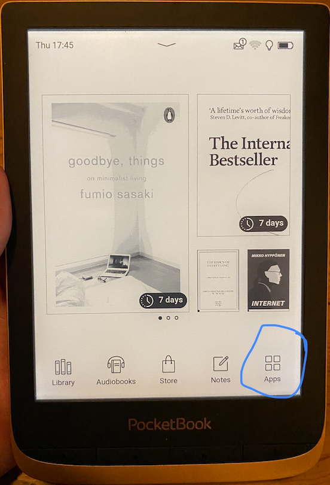
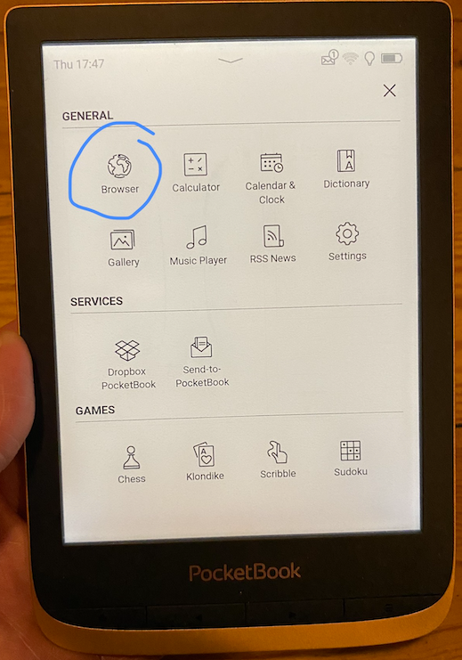
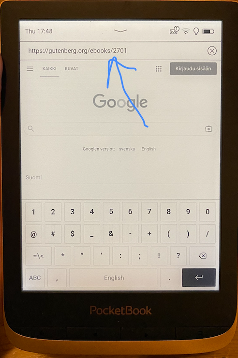
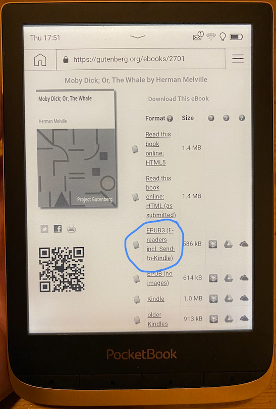
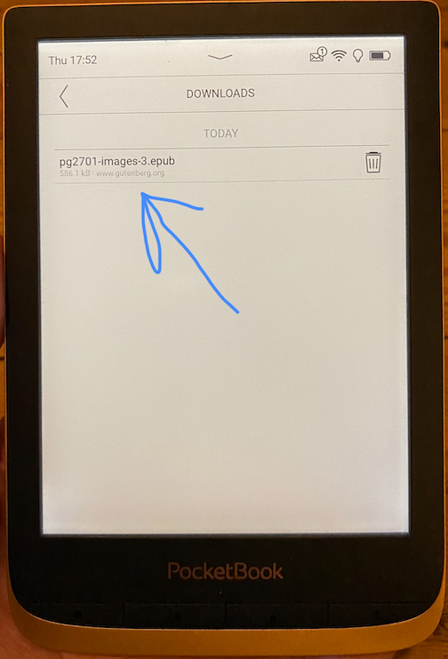
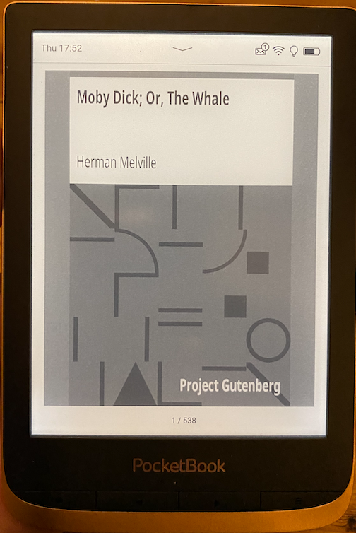

4 Gutenberg-projekti ja lukulaite
Gutenberg-projektin kirjojen luku onnistuu miellyttävästi ja vaivattomasti lukulaitteella seuraavasti:
- Käynnistetään lukulaitteen internet-selain.
- Surffataan halutun kirjan kohdalle Gutenberg-projektissa.
- Valitaan EPUB3-muotoinen kirja.
Työvaiheet ovat yksityiskohtaisemmin seuraavat:
- Klikkaa lukulaitteen päävalikossa Apps-kuvakkeeseen.

Klikkaa kuvakkeeseen Browser.

- Syötä haluamasi Gutenberg-projektin kirjan URL-osoite. (Huom. Lukulaitteen WWW-selain on varsin hidas, joten haen itse mieluiten kirjan URL-osoitteen ensin kännykän WWW-selaimen kanssa esiin ja kirjoitan sitten URL-osoitteen suoraan lukulaitteen selaimeen.)

- Klikkaa EPUB3-linkkiin.

- Klikkaa *.epub-muotoisen tiedoston nimen kohdalla.

- Kirja on tämän jälkeen heti valmis luettavaksi.
